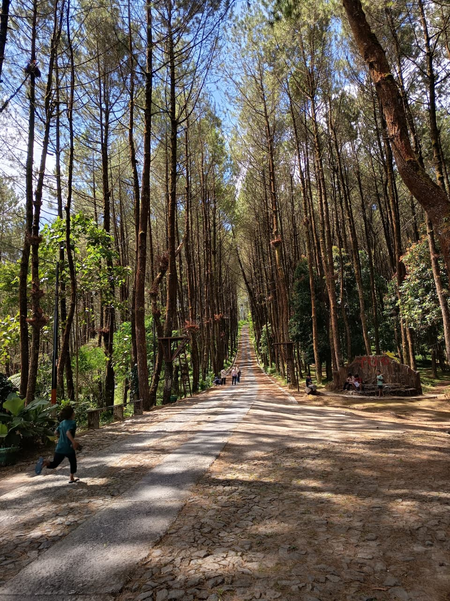

Eksplorasi
Destinasi Sekitar

Spot Foto & Alam
Top Selfie Pinusan Kragilan
Kawasan hutan pinus yang tertata rapi dengan jalur lurus estetik, jembatan gantung, dan berbagai wahana foto selfie berlatar alam pegunungan yang sejuk.

Pendakian & Kabut
Bukit Grenden Merbabu
Destinasi alam yang menawarkan panorama batuan merah, hutan pinus pekat, serta gardu pandang ikonik untuk menikmati pemandangan lautan awan yang menakjubkan.